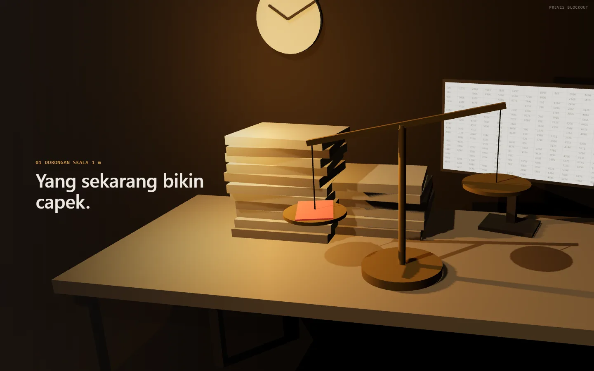
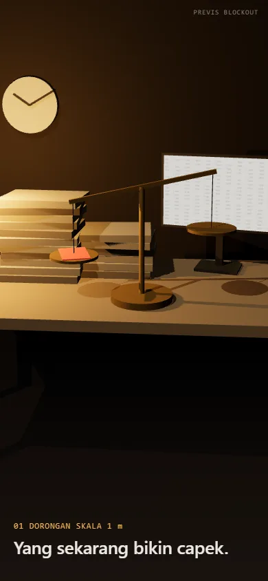
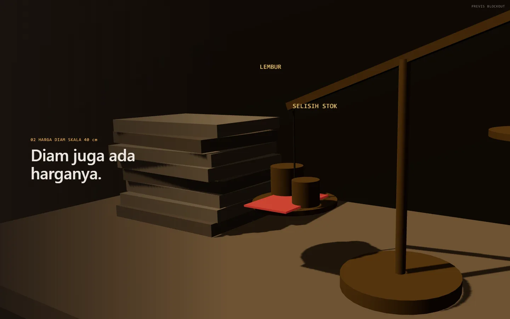
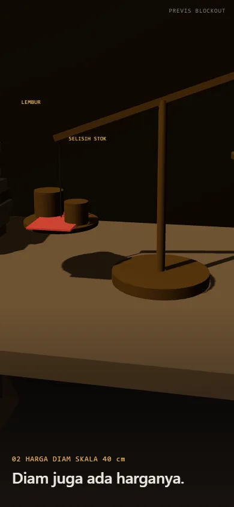
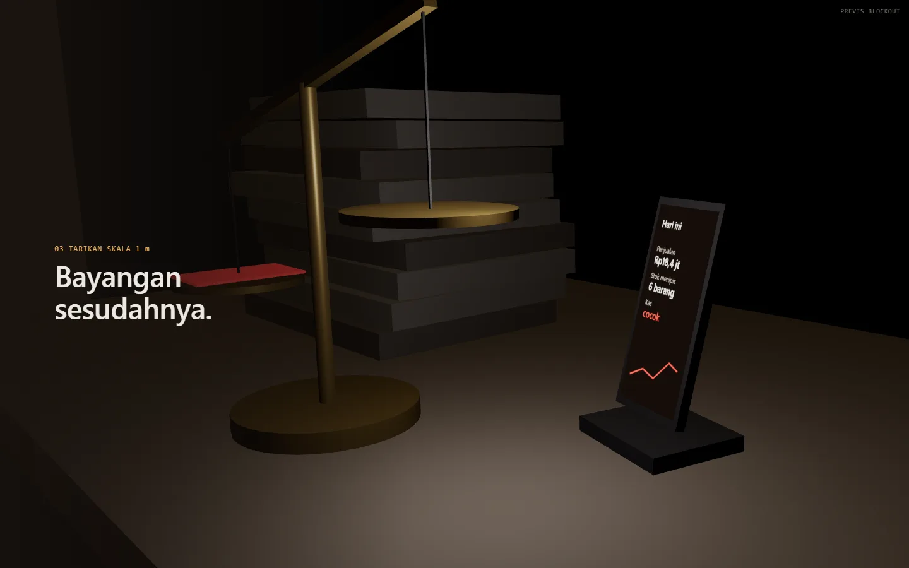
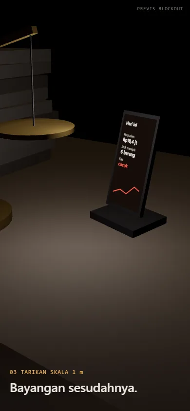
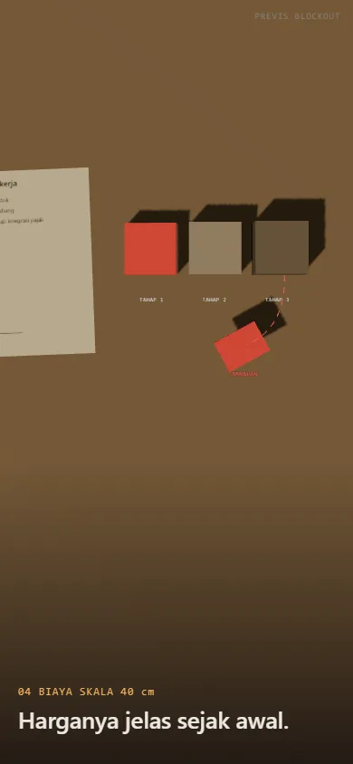
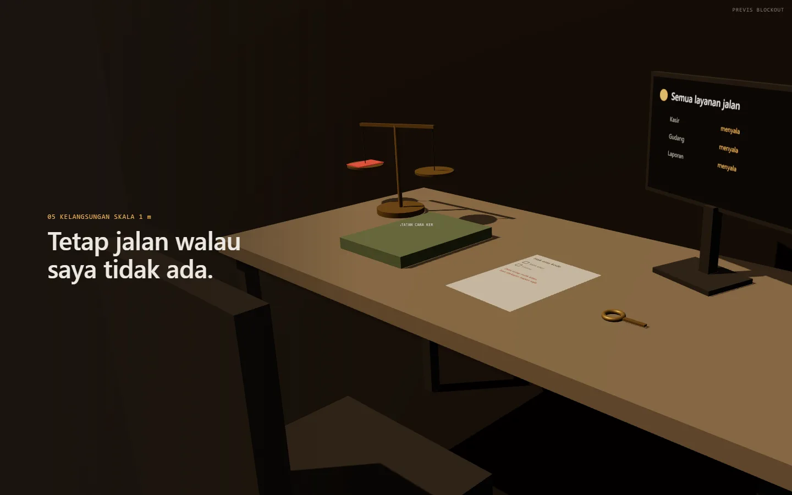
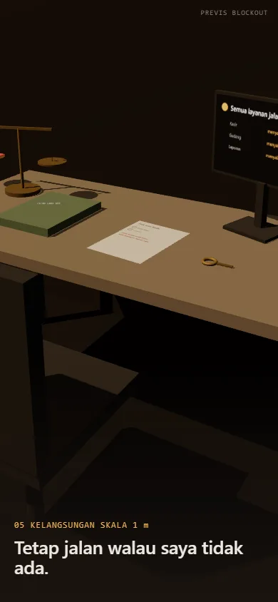

CERITA V5, ARAH G, PREVIS BLOCKOUT, BAGIAN 1 DARI 2
Yang ditimbang sebelum memutuskan
Render dari adegan blockout three.js (previs.html), kiri desktop 1440x900, kanan HP 390x844. Objek persisten: nota merah di atas timbangan; di skala kota ke atas, nota jadi titik data merah. Antarbabak memakai camera blend dan motion blur seperti sekarang. Benda masih abu-abu polos; bahan dan cahaya akhir ditentukan lewat look-dev sesudah papan ini disetujui.


01 DORONGAN, SKALA 1 m
Yang sekarang bikin capek.
- KEJADIAN
- Jam dinding 22.10. Map rekap menumpuk, layar spreadsheet masih terbuka, nota merah jatuh ke piring kiri timbangan dan piring itu turun.
- BENDA
- Meja kerja, tumpukan map, monitor, jam dinding, timbangan dua piring dengan nota merah.
- KAMERA
- Tiga perempat dari atas, dekat, sedikit miring.
- PEMICU
- Masuk babak: nota jatuh ke piring kiri.
- PIN
- 1,0 layar
- POLA BANK
- 55 persistent object
- BUKTI
- OCBC BFI 2024: 77% dari UMKM yang mencatat keuangan masih manual (D).


02 HARGA DIAM, SKALA 40 cm
Diam juga ada harganya.
- KEJADIAN
- Dua beban bertuliskan LEMBUR dan SELISIH STOK turun ke piring kiri, timbangan makin berat sebelah.
- BENDA
- Timbangan dari dekat, dua beban kuningan berlabel.
- KAMERA
- Dolly masuk ke timbangan, setinggi piring.
- PEMICU
- Gulir menurunkan beban satu per satu.
- PIN
- 1,2 layar
- POLA BANK
- 39 rack focus
- BUKTI
- DeHoratius dan Raman 2008: 65% catatan stok tidak cocok dengan fisik (cuplikan); angka di layar menunggu data klien.


03 TARIKAN, SKALA 1 m
Bayangan sesudahnya.
- KEJADIAN
- HP di meja menyala. Satu layar ringkasan: penjualan, stok, dan kas hari ini. Cahayanya menerangi map yang tadi menumpuk.
- BENDA
- HP berdiri di penyangga, cahaya layar sebagai lampu utama adegan.
- KAMERA
- Orbit pelan 20 derajat mengelilingi HP.
- PEMICU
- Layar menyala saat babak masuk.
- PIN
- 1,0 layar
- POLA BANK
- 53 camera path
- BUKTI
- Layar dari proyek nyata (NDS dashboard distributor).


04 BIAYA, SKALA 40 cm
Harganya jelas sejak awal.
- KEJADIAN
- Kartu 'tambahan fitur' masuk di tengah jalan. Kartu itu tidak menambah blok tahap 1, tetapi berdiri sendiri sebagai tahap 3 dengan harganya sendiri.
- BENDA
- Kertas lingkup, tiga blok tahap berlabel, kartu tambahan merah.
- KAMERA
- Dari atas meja, menunduk lurus.
- PEMICU
- Kartu tambahan meluncur masuk, lalu berbelok ke tahap 3.
- PIN
- 1,2 layar
- POLA BANK
- 33 FLIP object handoff
- BUKTI
- Panorama: sekitar sepertiga proyek ERP lewat anggaran dan telat (P). Harga per tahap dikonfirmasi Farrez.


05 KELANGSUNGAN, SKALA 1 m
Tetap jalan walau saya tidak ada.
- KEJADIAN
- Kursi developer kosong. Lampu status sistem tetap menyala. Di meja: map catatan cara kerja, kunci ekspor data, dan kontrak dengan dua kotak centang: milik atau lisensi.
- BENDA
- Kursi kosong, map catatan, kunci, kontrak, lampu status.
- KAMERA
- Setinggi kursi, mendorong pelan ke meja.
- PEMICU
- Orang berdiri dan pergi di awal babak; lampu tetap menyala.
- PIN
- 1,0 layar
- POLA BANK
- 55 persistent object
- BUKTI
- Pasal 36 UU 28/2014: hak mengikuti perjanjian (D). Bentuknya milik atau lisensi sesuai kontrak (koreksi Farrez).